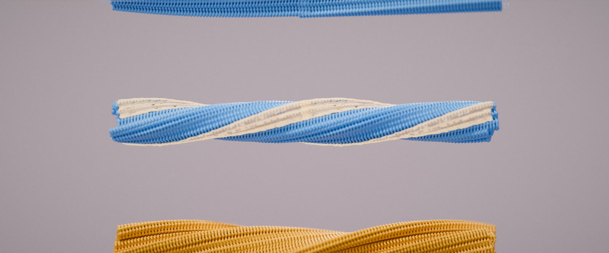

Postdoc · 2023 – present · first author
When amyloids meet: medin reshapes Alzheimer's Aβ fibrils
Amyloid-β and medin, a common vascular amyloid of ageing, are deposited together in the walls of brain blood vessels. I asked what happens to their structures when they aggregate side by side. From one mixed reaction, cryo-EM resolved three fibril populations: a known Aβ40 polymorph, an Aβ40 fibril with Aβ42-like features that does not appear when Aβ40 aggregates alone, and the first atomic structure of full-length medin.
I planned the project and ran the co-aggregation and seeding assays, cryo-EM, immunogold labelling and LC-MS, and combined binding data (BLI, Fidabio, DLS, ThT, SEC) with FoldX interface energies to locate where the two proteins touch.
Nature Communications, 2026 →